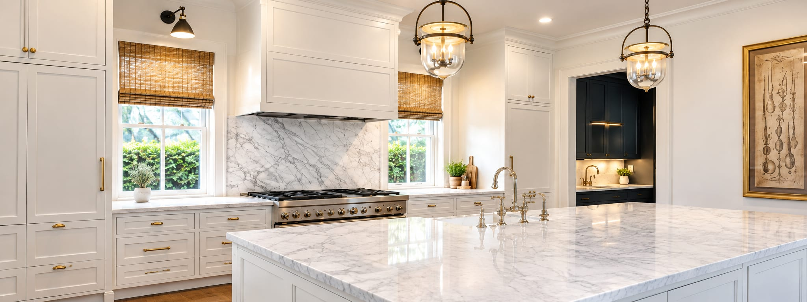
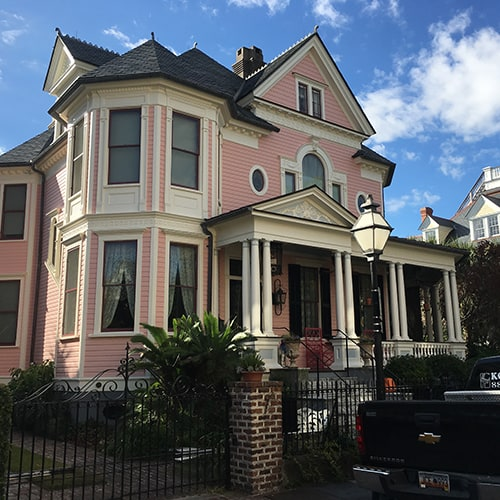
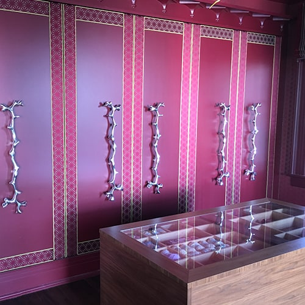

Koozer Painting · Mount Pleasant, SC
Trusted Charleston painting contractorssince 1996.
Interior, exterior and historic restoration painting for the greater Charleston area, done right the first time.
Welcome to Koozer Painting
Skilled painters, dedicated to quality.
We have been serving the greater Charleston area since 1996, and take strong pride in the quality of our work and the professionalism of our employees.
Our team of skilled painters can help with any of your painting needs. Whether you’re looking to brighten your kitchen with a fresh coat of paint or paint the entire exterior of your home, Koozer Painting is the company for you.
We specialize in restoration work in historic downtown Charleston, but we can accommodate any customer’s painting needs.
Historic restoration specialists
We specialize in restoration work in historic downtown Charleston, where painting is about more than color. Preservation groups, architects and restoration firms have trusted us for years with some of the city’s most significant buildings, because we understand that protecting a historic structure means respecting and preserving its original finishes.
Trained and professionally managed
Our painters are professionally trained and managed, which means you can put your trust in Koozer Painting to get the job done right the first time. From the first estimate to the final coat, you can expect careful preparation, clear communication and close attention to detail on every project, large or small.
We stand by our work
We’re dedicated to quality, and we take pride in knowing that we provide some of the best painting services in the Charleston area. We stand by every job we complete, and we won’t leave until each customer is satisfied.
What we do
Painting services in Charleston, SC
Koozer Painting provides interior painting, exterior painting, commercial painting and specialty services throughout Charleston and Mount Pleasant, SC. From a single room to a historic landmark, our crews bring the same care to every surface.

Interior Painting
Kitchens, foyers, cabinetry and every room in between, finished cleanly and on schedule.
Learn more
Exterior Painting
Full-house exteriors prepared and painted to hold up to Lowcountry sun, salt air and humidity.
Learn more
Commercial Painting
Restaurants, shops and offices painted with as little disruption to your business as possible.
Learn more
Specialty Services
Historic restoration, custom finishes and detail work for one-of-a-kind spaces.
Learn moreOur work
Recent projects
Historic homes, restaurants, custom interiors and more. Select a photo to enlarge it.
Where we work
Serving Charleston and the surrounding area
Based in Mount Pleasant, we paint homes and businesses across the greater Charleston, SC area.
Trusted by Charleston’s preservation community
What the people who protect Charleston’s landmarks say
We’ve chosen Koozer Painting as our contractor for historic house restoration projects in Charleston for many years. Koozer always delivers a quality product.
Richard D. Marks, IIIRichard Marks Restorations, Inc.
I know that I can count on Koozer Painting to meet the high standards we require for Charleston’s important architectural treasures.
Glenn F. Keyes, FAIAArchitect
Their work is excellent, the crews are efficient and they get the job done in a timely manner.
Will HamiltonProperty Manager, Historic Charleston Foundation
In addition to a wealth of experience, Kevin and his team bring a respect and understanding of historic buildings to every project.
Kristopher KingExecutive Director, Preservation Society of Charleston
Free estimates
Ready to see your space in a new color?
Tell us about your project and we’ll follow up with a free estimate. Whether it’s a single room or a whole house, we’d be glad to take a look.